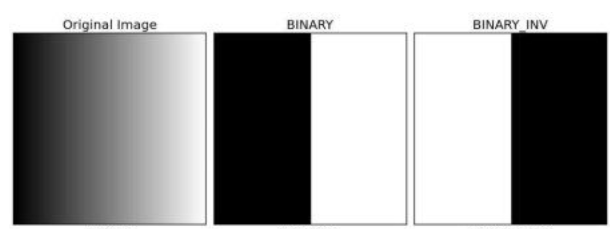

OPENCV
Présentation générale d’OPENCV
Initialement développée par Intel, OpenCV (Open Computer Vision) est une bibliothèque graphique. Elle est spécialisée dans le traitement d’images, que ce soit pour de la photo ou de la vidéo.
Sa première version est sortie en juin 2000. Elle est disponible sur la plupart des systèmes d’exploitation et existe pour les langages Python, C++ et Java.
Sous licence BSD (Berkeley Software Distribution Licence), OpenCV peut être réutilisé librement, en tout ou partie, pour être intégré au sein d’un autre projet.
C’est notament cette notion qui fait qu’OpenCV est très populaire et à la base de nombreux logiciels de traitements d’images/vidéos. Elle est aujourd’hui développée, maintenue, documentée et utilisée par une communauté de plus de 40 000 membres actifs !

Les traitements d’images
Les algorithmes d’OpenCV permettent d’appliquer divers traitements sur les images pour faciliter la détection d’éléments précis dans celles-ci. Voici quelques exemples :
Le Tresholding (seuillage) d’une image permet de définir une valeur de pixel (correspondant à une couleur) qui servira de seuil. Au-dessus ou en dessous de cette valeur (selon l’agorithme), tous les pixels se verront assigner une autre valeur. Il existe 4 algorithmes de Tresholding.


Les filtres de lissage, permettant de réduire le bruit (1) d’une image. Parmi eux, nous avons notamment les filtres par convolution, se basant sur les pixels voisins pour faire une moyenne.


Les filtres morphologiques permettant, sur une image binaire (uniquement noire et blanche avec le fond en noir et l’objet sur lequel on effectue le traitement en blanc) d’appliquer une érosion ou dilatation, c’est-à-dire affiner l’objet pour l’érosion et l’élargir pour la dilatation. | Image de base | Après application de l’érosion | Après application de la dilatation
Image de base
Après application de l’érosion
Après application de la dilatation
Il est possible de combiner l’érosion et la dilatation pour la suppression de bruit dans une image. L’application de l’érosion puis dilatation est appelé Opening (Ouverture) et l’application de la dilatation puis de l’érosion est appelé Closing (Fermeture)
Certains algorithmes d’OpenCV utilisent de l’intelligence artificielle pour faciliter le traitement des images. Dans les faits, cette IA sert à améliorer les algorithmes précédemment détaillés pour obtenir des résultats plus précis

En conclusion
OpenCV s'impose aujourd'hui comme la bibliothèque de référence pour le traitement d'images et la vision par ordinateur. Sa licence BSD permissive, sa grande communauté et sa polyvalence en font un outil incontournable aussi bien pour les projets académiques que pour les applications industrielles.
Des startups comme Axopen aux géants de la tech, en passant par les systèmes d'arbitrage vidéo ou les technologies émergentes comme le deepfake, OpenCV démontre chaque jour sa capacité à s'adapter aux défis technologiques les plus variés.
Que ce soit pour le seuillage, le lissage, les opérations morphologiques ou l'intégration d'IA, OpenCV continue d'évoluer grâce à sa communauté active de plus de 40 000 membres, promettant encore de nombreuses innovations dans le domaine de la vision par ordinateur.